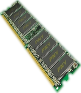

Memory is the second most important part of your system to overclock. After you've sucessfully clocked, and tested your CPU for stability, you should concentrate on memory next.
Assuming your ram is running below or at 200 mhz. Timings should be adujusted in a few differant situations. Basically you'll want to have your timings set to their default specifications when they're running at supported clock speeds or lower. However if you wish to push the clock speed of your ram, adjusting the voltage of the memory, and 'relaxing' the memory timings can make that an easier task.
 Regardless of clock speed memeory timings can generally only be taken down so far. But they do provide headroom for overclocking if you are raising the baseclock so that the memory will run substantially faster than its rated speed. It is important that before you start to overclock your memory, that you bring it's initial speed down, so that you can concentrate on the CPU , yet note, that if you were to bring up the initial speed back to its original setting, your RAM might be running at too high a clock speed. Depending on your overclocking situation, memory has to be treated speically.
Overclocking Memory